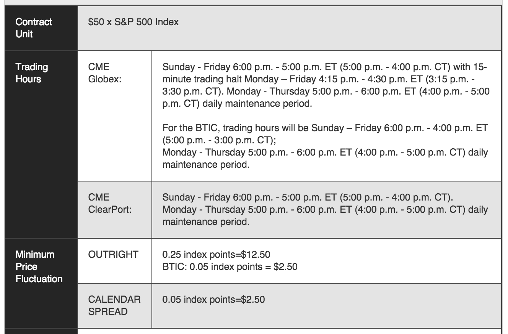

Futures Contracts
Futures contracts are forward contracts with the following differences:
- They are exchange traded.
- The contract is standardized (by the exchange).
- They are settled daily.
Role of Exchanges
Exchanged are centralized locations with the following features:
- They standardize contracts.
- They aggregate supply and demand.
- They determine limitations on who can trade and how.
- They set limitations on borrowing and distribute risk by requiring transactions to be routed through clearing houses.
Exchanges
Major futures exchanges at present:
Contract Specifications
The futures exchange determines the following aspects of contracts:
- Price units.
- Price increments.
- Size units.
- When the contract trades.
- When the contract is settled.
- How the contract is settled.
- Margin.
Example: E-mini S&P 500 Contract
The E-mini S&P 500 futures contract is a contract on the S&P 500 index.
- Note that the S&P 500 is simply an index, not a traded asset.
- The price of the E-mini is quoted in S&P 500 index points.
- The actual size of the contract is 50x the index.
- Margin for a single contract is $5060.
E-mini S&P 500 Specifications
E-mini S&P 500 Specifications

Futures Maturities
Note that many futures contracts with different maturities on the same underlying can exist at the same time.
- For example, E-mini contracts expire on the third Friday of each Mar/Jun/Sep/Dec.
- At any date, the next five contracts are available for trade.
- The contract closest to expiry is called the front-month contract and is always the most liquid.
Delivery of Commodities
For commodities, delivery is an important part of the specification.
- What type (grade) of the product can be delivered.
- Range of dates for delivery.
Terminology
- Open interest: Total number of contracts outstanding.
- Trade volume: The number of contracts traded.
- Settlement price: The last price before market close.
Volume vs. Open Interest
- What is the difference between open interest and trade volume on a given day?
- When are trade occurs, what are the possible effects on open interest?
- Can trade volume be greater than open interest during day?
Margin
When investors borrow money from a broker to purchase an asset, they are buying on margin.
- The initial margin is cash or marketable securities that an investor gives to a broker in order to purchase an asset.
- The purchased securities are maintained in an account by the broker
and are monitored.
- Gains and losses on the securities are added to the value of the account.
- The maintenance margin is a lower threshold for the value of the
account.
- When the value falls below, the investor must add cash or securities up to initial margin.
- Margin accounts are typically settled daily.
E-mini Margin
For the E-mini:
- Initial margin is $5225.
- Maintenance margin is $4750.
- The settlement price on 6 April 2016 was 2060.25, or a notional
value of 50x2060.25 = $103012.5.
- This implies a leverage ratio of \(\smash{\frac{103012.5}{5225} = 19.71}\)
Example: Gold Futures
Suppose that an investor buys two CME Group gold futures contracts (symbol GC) for $1450 (per troy ounce).
- Initially margin is $6000 per contract.
- Maintenance margin is $4500 per contract.
- The contract size is 100 troy ounces, which implies a notional value of 1450*100 = $145,000.
- The resulting leverage ratio is \(\smash{\frac{145000}{6000} = 24.17}\).